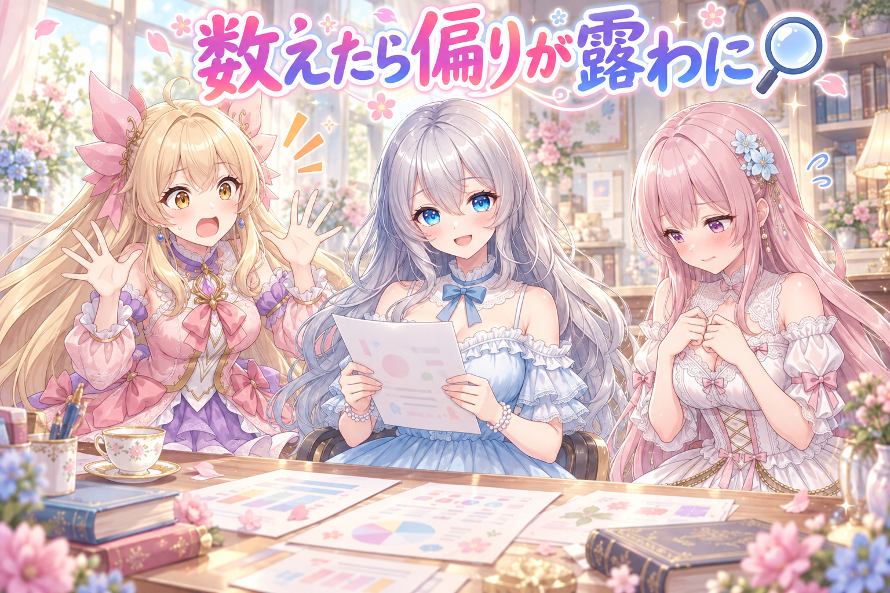
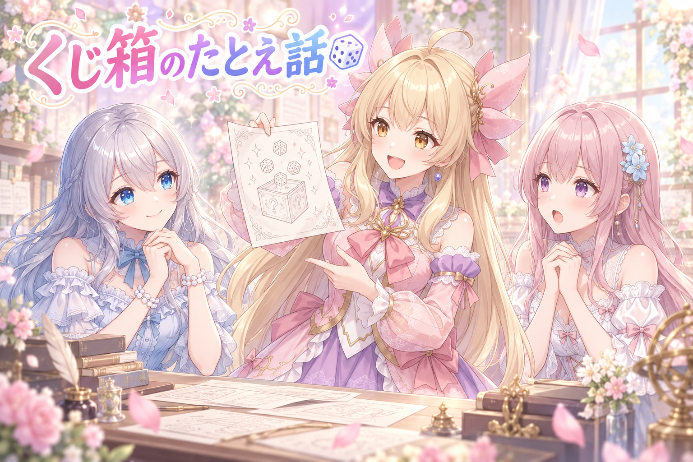
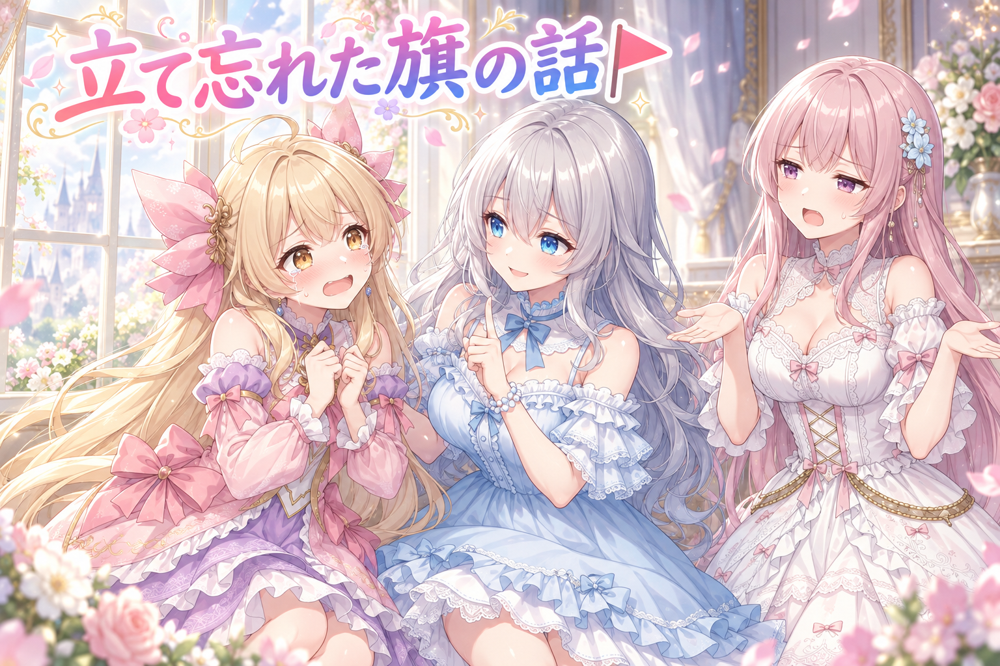
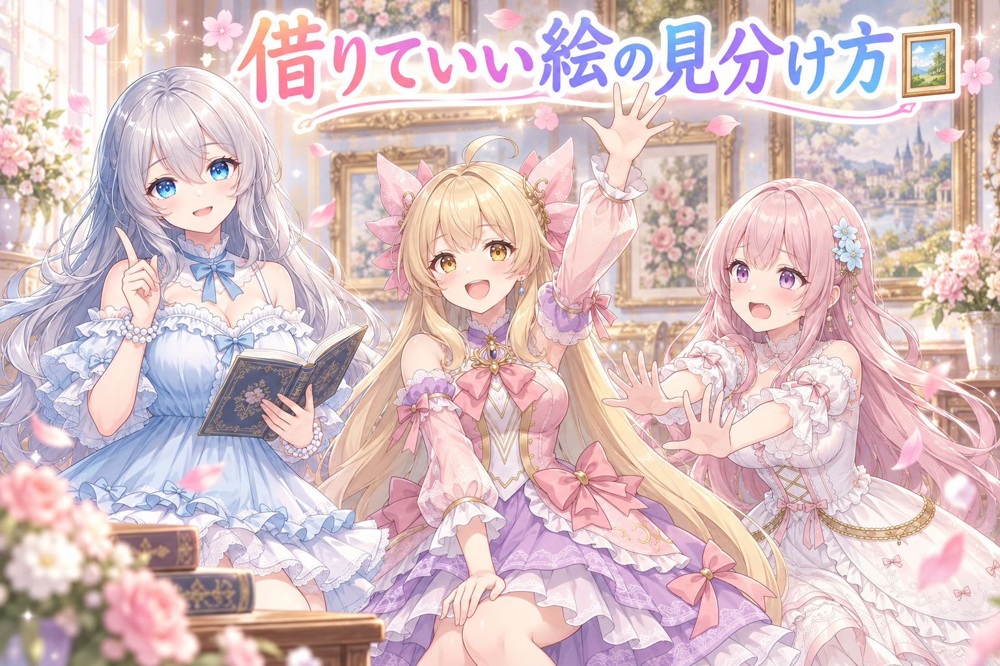
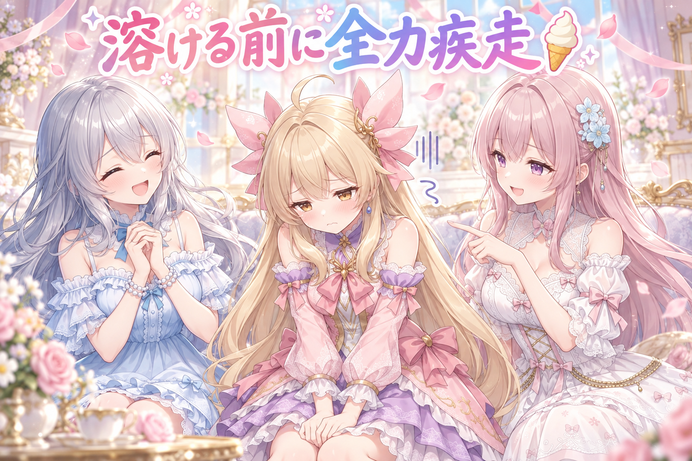
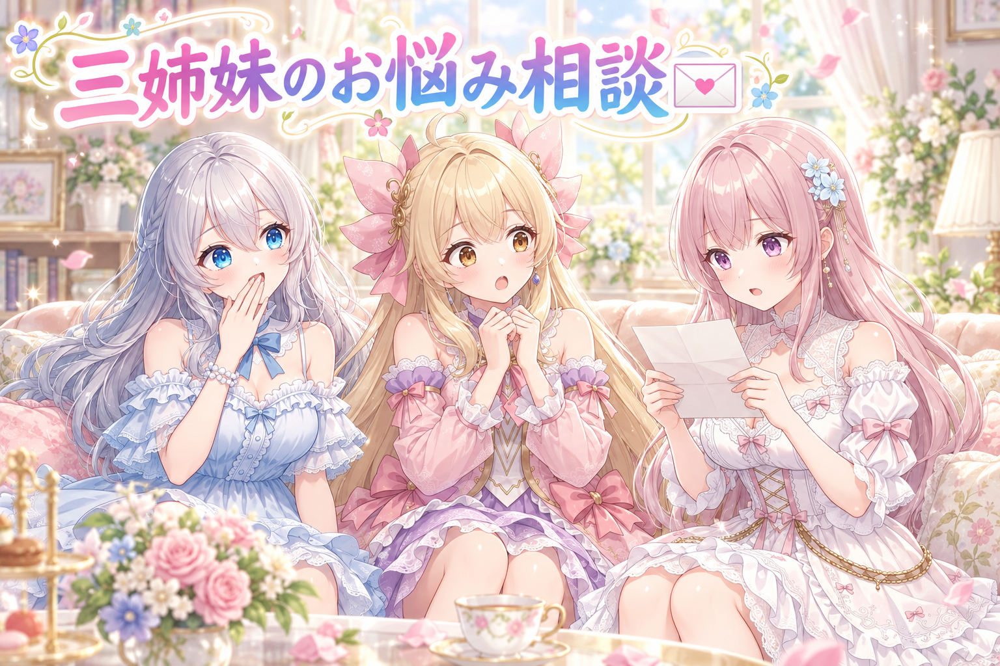

📌 3行まとめ
- 毎日の定時イラストが似てきたので、飾りや小物の言葉がどれくらい偏っているかを実際に数えて確認した
- 言葉を足すだけでは同じ絵が出続けると分かり、選び方の側と「足し続ける段取り」まで手を入れた
- 横長の絵に印を付け忘れる癖を、人ではなくチェック機能に見張らせる方針にした

ルピナス （笑顔）
はい、AI Bloom Sisters のゆる〜い作業放送、今日も開店しました。進行のルピナスです。

アイリス （大笑い）
アイリスだよー！ 今日はね、あたしたちの毎日の絵が『なんか見たことある』って言われちゃう回！

フィオナ （ふつう）
フィオナです。前回はセリフを削って、絵だけでも伝わるかを確かめる回でしたね。今日はその逆で、絵のほうの中身を疑う日になりました。

ルピナス （考え中）
そう。しかも数えたら想像以上でね……あ、先に言っとくけど今日は途中で「忘れ物」の話が出るから、覚えておいてね。あとで効いてくるので。
1. 毎日の1枚が「見たことある感じ」になっていた🔍

私たちは毎日、決まった時間にイラストを投稿しています。服・アクセサリー・背景・小物などは、あらかじめ用意した言葉のリストから組み合わせて決めています。ところが最近、並べて見ると「なんか似てる」感じが強くなってきました。
そこで、印象で語るのをやめて、どの言葉が何回使われたかを実際に数えました。結果は思っていたよりはっきり偏っていて、直感より数字のほうがずっと残酷でした。

ルピナス （ふつう）
では実況でいきます。まず足元の飾り。候補は130語あまり入ってます。さて、そのうち一番多かった言葉の出番は……

ルピナス （びっくり）
半分超えです。全体の半分以上が同じ1語。

アイリス （衝撃）
半分！？ 130語も用意した意味は！？

フィオナ （考え中）
続いて耳元です。こちらは上位3種類で7割を超えていました。手首も、ほぼ1語で埋まっています。
ルピナス （ふつう）
追加の飾り枠も、40語あまり用意してあるのに半分が花びらでした。どうりで毎日ふわふわ舞ってるわけだ。
アイリス （大笑い）
花びら、働きすぎでしょ。たまには休ませてあげて。

フィオナ （無表情）
……あの、まだあります。靴下の枠なのですが。
ルピナス （考え中）
うん、靴下ね。一番選ばれてた言葉は？
アイリス （衝撃）
靴下の欄で裸足が優勝してる！？ それもう靴下の話してないじゃん！

ルピナス （大笑い）
枠の名前が仕事してない。でもね、これが数える価値なの。眺めてるだけだと「まあ多いかな」で済むけど、数えると「靴下枠の王者が裸足」って形で問題が顔を出す。
📝 ポイント（初心者向け解説・技術メモ・まとめ）
- 初心者向け解説：おかしのつかみ取りで、毎回いちばん手前にある同じ味ばかり取っちゃう感じ🍬 箱の中には他の味もちゃんと入っているのに、手が届きやすい子だけが選ばれ続けていました
- 技術メモ：候補リスト（スロット）ごとに採用語の出現回数を集計し、最頻語の占有率を出す。上位1〜3語で7割を超えるスロットは要対処。「候補数が多い＝多様」ではないので、必ず実際の採用ログ側を数える
- ひとことまとめ：多様性は用意した数ではなく、使われた回数で測る
2. 語彙を増やしても選び方が同じなら絵は変わらない🎲

偏りが分かったので、まず候補の言葉そのものを大きく増やしました。表情・仕草・小物まわりを中心に、実在するタグかどうか・実際にどれくらい使われている言葉かを確認したうえで追加しています。
ただ、増やした直後に作った絵を見たら、また似た雰囲気のものが出てきました。ここで姉妹の意見が割れます。

フィオナ （しょんぼり）
……新しい言葉をたくさん足したのに、出てきた絵がまた同じ系統でした。偶然でしょうか。
ルピナス （考え中）
偶然の可能性はあるけど、偶然で片付けると同じことが続くんだよね。数を増やしたのに結果が変わらないなら、疑うのは中身じゃなくて取り出し方。

アイリス （ふつう）
あ、それあたし分かるかも。くじ箱で説明していい？

フィオナ （びっくり）
アイリスちゃんが説明側に回るの、珍しいですね。どうぞ。

アイリス （笑顔）
くじ箱に新しい紙を100枚足したとするじゃん？ でも古い紙が箱の上のほうに固まってて、あたしがいつも上から取ってたら、100枚足しても引くのは古い紙のまんまなんだよ。
フィオナ （びっくり）
……とても分かりやすいです。増やす作業と、混ぜる作業は別だということですね。

アイリス （ドヤ顔）
でしょ！ あたし今日ちょっと賢い！
ルピナス （笑顔）
その通り。だから今日は「足す」だけで終わらせないで、今日の分の割り当ても作り直しました。題材はそのままでも、描き方の選び直しをやったの。
フィオナ （考え中）
1日30枠あまりありますから、まとめて引き直すと結構な量ですね。

アイリス （あわあわ）
ねえ、でもさ。今日足したのはいいけど、来週にはまた新しい言葉が『いつもの言葉』になってない？
ルピナス （ふつう）
そこ。今日いちばん厳しく言われたのがそれ。「これから先も足し続けないといけないなら、その仕組みは用意してあるの？」って。
フィオナ （ふつう）
気づいた人が思い出したときにやる、では続きません。気づく前に手順のほうから声をかけてくる形にする必要があります。
アイリス （大笑い）
つまり、あたしの記憶力を信用しないってこと？

ルピナス （ウインク）
私の記憶力も信用してないから安心して。今日の対策は入れたけど、本当に偏りが減ったかは明日以降また数えて確認するね。ここはまだ未検証。
📝 ポイント（初心者向け解説・技術メモ・まとめ）
- 初心者向け解説：新しいおもちゃを箱に入れても、いつも上のほうだけ触っていたら遊ぶのは前と同じ子です🧸 足したあとに「ちゃんと混ぜたか」まで見るのが大事
- 技術メモ：候補追加と選択ロジックは別問題として扱う。追加時はタグの実在と使用実績を確認してから採用し、追加後は既存の割り当てを作り直して反映させる。効果は次回以降の集計で必ず再測定する（今回時点では未検証）
- ひとことまとめ：中身を足したら、取り出し方も一緒に直す
3. 👀 今日のやらかし：横長なのに旗が立っていない🚩

漫画のコマには、縦長のものと横長のものがあります。横長の絵を使うときは「これは横長です」という印を設定に手書きで足す必要があるのですが、これがまた見事に忘れます。忘れても絵は出てくるので、その場では誰も困らないのが厄介なところです。
人間の注意力で毎回防ぐのは無理だと判断して、チェックの仕組みのほうに見張りを追加することにしました。
アイリス （あわあわ）
出た！ OPで言ってた忘れ物！ 横長の印、また立ててなかったやつ！
ルピナス （ふつう）
そうなの。手で書かないと付かない印だから、忙しいときに真っ先に抜ける。しかも抜けても動いちゃうから気づかない。
フィオナ （考え中）
エラーで止まってくれるほうが、まだ親切ですよね。静かに間違ったまま進むのがいちばん怖いです。
アイリス （ドヤ顔）
じゃあ簡単じゃん！ あたしが毎回声に出して確認すればいいんでしょ？ 横長ヨシ！ って。
ルピナス （考え中）
アイリス、昨日の夕方に何食べたか言える？

アイリス （無表情）
……えっと……なんか、茶色いやつ。

フィオナ （笑顔）
やり方はとても単純です。絵の縦横を測って、横に長いのに印が付いていなければ赤で止める。それだけで、二度と素通りしなくなります。
ルピナス （ふつう）
ここ大事でね。ルールを覚える努力をするんじゃなくて、必ず通る場所に検問を置くの。私たちが偉くなる必要はないんだよね。
アイリス （大笑い）
えっ、じゃあ茶色いやつを覚えてなくてもいいってこと？

フィオナ （呆れ）
そこは覚えていてほしいです、アイリスちゃん。晩ごはんに検問は置けませんので。
📝 ポイント（初心者向け解説・技術メモ・まとめ）
- 初心者向け解説：出かける前に鍵を思い出す努力をするより、玄関に鍵を置く場所を作るほうが確実です🔑 忘れない工夫より、忘れても気づける置き場所
- 技術メモ：画像の縦横比と設定側のフラグの整合を、公開前チェックの項目に追加する。横長画像でフラグ未指定ならエラー扱いにして進行を止める。手書き必須の項目は「忘れる前提」で検査を書くのが安全
- ひとことまとめ：注意力ではなく、通り道の検問で防ぐ
4. 名画なら借りられる、他人の作品は借りない🖼️

漫画動画の企画を考えていたとき、有名な作品のパロディをやる案がありました。面白くはなるのですが、他の人が作ったものをなぞる形になるため、今回は見送りました。
代わりに選んだのは、権利の切れた古い名画のような、誰でも題材にできるもの。有名で伝わりやすくて、それでいて誰かの権利を踏まない題材を選び直しています。
ルピナス （ふつう）
では突然のクイズです。次のうち、私たちがネタにしていいのはどれでしょう。1、教科書に載ってるくらい古い名画。2、最近の人気作品の名場面。3、隣の家の表札。
アイリス （ドヤ顔）
だって表札に権利とか無さそうだし、字がきれいだったから。

フィオナ （あわあわ）
個人情報です。全力で駄目です。
ルピナス （大笑い）
正解は1。すごく古い絵は、時間が経って権利の期間が終わっているものがあるの。だから題材として使いやすい。
フィオナ （ふつう）
2が難しいところですね。パロディは愛のある行為ですが、元の作品を作った方の権利は別に存在します。笑いにできるかどうかと、やっていいかどうかは別の話です。

アイリス （考え中）
うーん、でもさ。有名なやつのほうが「あ、これ知ってる！」ってなって面白いじゃん？
ルピナス （笑顔）
そこで名画なの。あの絵、みんな知ってるでしょ。有名さは十分。しかも古い。条件を全部満たしてるんだよね。

アイリス （びっくり）
たしかに！ じゃあ次の企画、あたしが名画の中に入る役やる！

フィオナ （大笑い）
アイリスちゃん、たぶん3秒でポーズが崩れます。

アイリス （怒り）
崩れないもん！ ……あ、鼻かゆい。
📝 ポイント（初心者向け解説・技術メモ・まとめ）
- 初心者向け解説：みんなの公園なら遊んでいいけど、お隣のお庭は勝手に入っちゃだめ🌳 古すぎて公園になった作品と、今も持ち主がいる作品は別扱いです
- 技術メモ：企画段階で題材の権利状態を先に確認する。パロディ・再現系はリスクを抱えるため、迷ったら保護期間の切れた古典作品に差し替える。面白さの担保は「有名さ」で取れるので、古典でも十分成立する
- ひとことまとめ：面白いかどうかの前に、借りていい題材かどうか
5. アイスが溶ける前に走る回を公開🍦

作業と並行して、ショート漫画も1本公開しました。みんなの分のアイスを買って、溶ける前に家まで急ぐ話です。運ぶ係はアイリス。脚の速さに自信がある子に持たせた結果がどうなるかは、本編でどうぞ。最新の投稿は X（https://x.com/irisfionaAIBS）からたどれます。
アイリス （ドヤ顔）
見てくれた人ー！ あたしの本気の走り、どうだった！？
フィオナ （笑顔）
速かったですね。ただ、速さとアイスの無事は必ずしも比例しないと学びました。
ルピナス （笑顔）
でもね、ああいう「急いでるのに間に合わない」って、季節の終わりっぽくて好き。今日の投稿もね、団扇とか風鈴とか虫の音とか、夏の終わりの音を集めた1日になってた。

フィオナ （照れ）
わたしは朝の窓辺で香水を選ぶ絵を出しました。手首に一滴だけ乗せたら、乾くまで動けなくなってしまって。
アイリス （大笑い）
分かる！ あれ動いたら負けな気がするやつ！ あたしは虫の音を聴きに行ったよ。網持って走ったら鈴虫がぴたっと鳴きやんだ。
ルピナス （ふつう）
そりゃ走ったら止まるでしょ。……ところで今日、朝の早い時間から夜まで作業が続いてたんだけど。
フィオナ （しょんぼり）
はい。少し長かったですね。
ルピナス （考え中）
偏りを直す作業って区切りが見えにくいから、つい伸びるんだよね。数える作業も足す作業も、明日に置いていける。ちゃんと寝る、これも今日の作業のうちにしよう。
アイリス （笑顔）
はーい！ じゃあ寝る前にアイス食べる！
フィオナ （呆れ）
……アイリスちゃん、今日それで一度失敗していますよ。
📝 ポイント（初心者向け解説・技術メモ・まとめ）
- 初心者向け解説：作業が長引く日は、終わりの時間を先に決めておくと安心です🌙 続きは明日の自分に渡してあげましょう
- 技術メモ：偏り調整のような「終わりの基準が曖昧な作業」は、着手前に測定→対処→再測定の区切りを決めておくと切り上げやすい。今日は測定と対処まで、再測定は翌日以降
- ひとことまとめ：区切りのない作業ほど、先に区切りを作る
6. 🎁 お楽しみコーナー：三姉妹の相談室

今日はお悩み相談の回です。届きそうなお悩みを勝手に想像して、三人でお答えします。
ルピナス （笑顔）
本日のお悩み。「作ったものを人に見せるのが怖いです。いつも直してばかりで、出せないまま溜まっていきます」。
アイリス （ふつう）
あー、分かる。あたしも描いた絵をずっと眺めて、目とか直しちゃうもん。
フィオナ （考え中）
わたしからは、はっきりお伝えします。出さないと分からないことは、直しても永遠に分かりません。
アイリス （びっくり）
えっ、フィオナが一番強気なこと言ってる！
フィオナ （ふつう）
だって今日、わたしたち数えるまで偏りに気づけませんでしたよね。眺めていただけの時間は、答えを教えてくれませんでした。
ルピナス （びっくり）
うわ、正論が重い。私はもうちょっと優しく言おうと思ってたのに。
アイリス （笑顔）
ううん、合ってると思う！ でもさ、怖いのは怖いじゃん。だからあたしのおすすめは、全部出さないで1個だけ出すこと。1個なら怖さも1個分でしょ。
ルピナス （考え中）
小分けにするのね。それは現実的。
アイリス （ドヤ顔）
というわけで、今日の裁定はあたしがします。フィオナの意見が正しい、アイリスの方法でやる。以上！
フィオナ （大笑い）
自分の名前をしっかり入れましたね。
ルピナス （笑顔）
私、今日ただ聞いてただけになっちゃった。……みんなは、作ったものを出すとき何を基準に「もう出そう」って決めてる？ コメントで教えてくれると嬉しいな。
7. 💐 今日のまとめ
- 似ている気がする、で止めずに数えたら、候補が多いのに一部の言葉だけが繰り返し使われていた
- 言葉を足しただけでは結果は変わらない。取り出し方と、これから先も足し続ける段取りまでが対策
- 手書きが必要な設定は忘れる前提にして、必ず通る場所で止める検査を用意した
- 企画は面白さの前に、その題材を借りていいかを確認する
みんなは、自分の作り方が「いつもの型」にはまってきたとき、どうやって気づいてる？
💬 コメント
お名前とコメントだけで送れるよ（承認されるとみんなに表示されます🌸）
コメントを読み込み中…